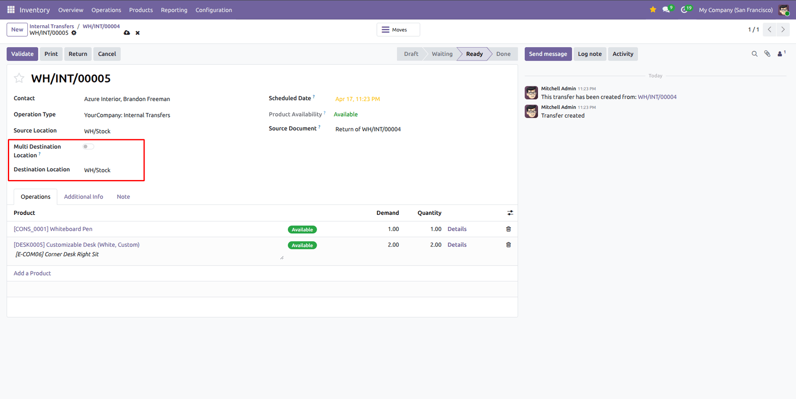
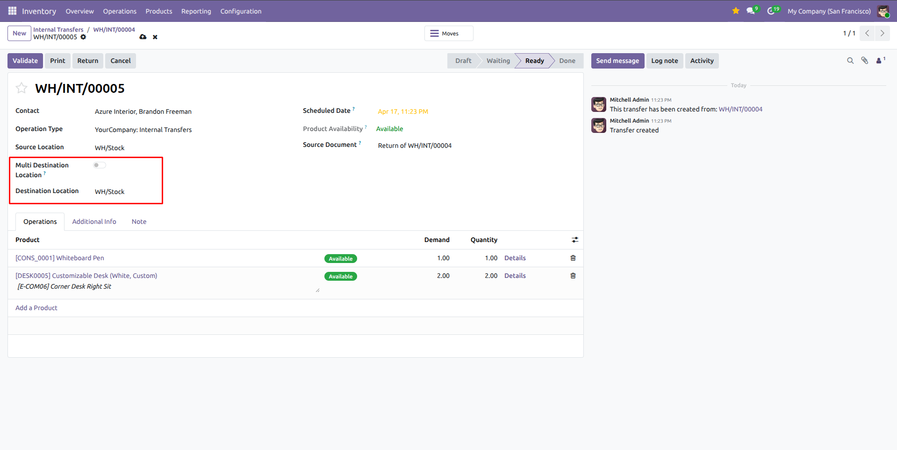
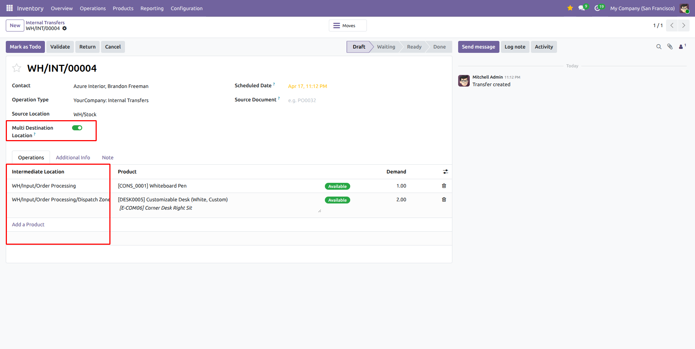
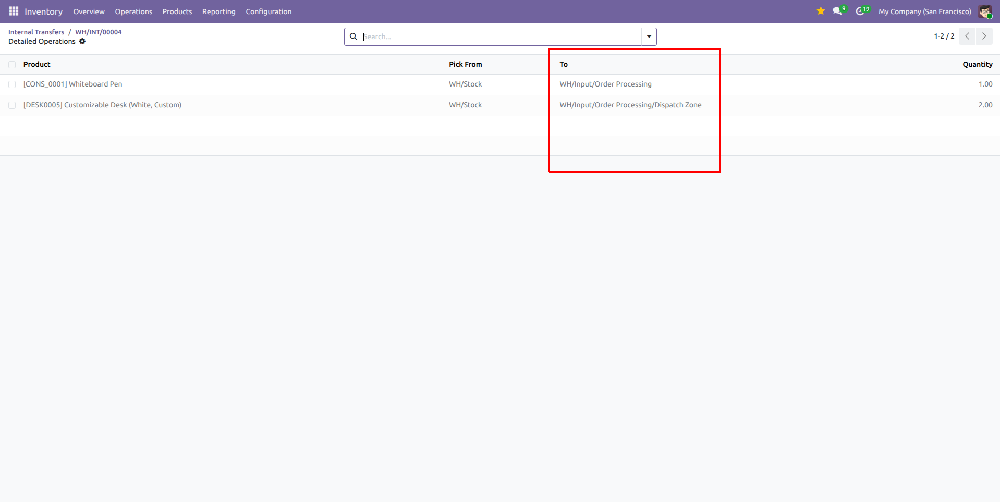
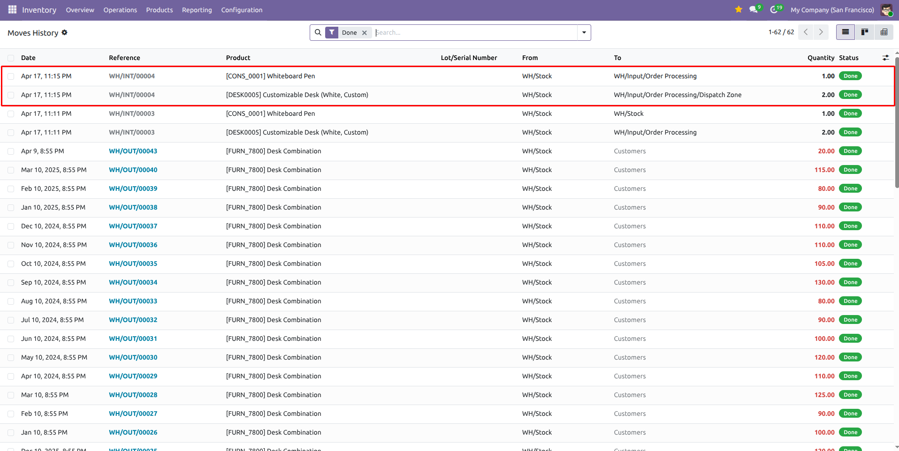
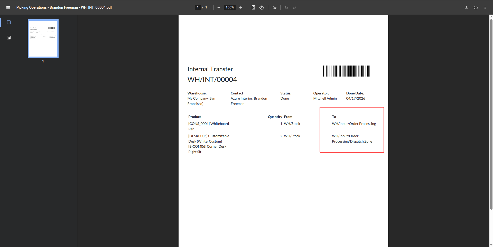

NZ Solutions Apps for Odoo
Multi Destination Location Stock Transfer Line — Odoo 19
Control transfer destinations at operation-line level. Enable one toggle and assign a different destination location for each stock move line inside the same transfer, with full visibility in move history and printed reports.

What does this module provide?
This module extends Odoo Inventory transfers by adding a Multi Destination Location toggle on internal transfer forms. When enabled, the transfer line list displays a destination column so you can set a different destination location per operation line. When disabled, all editable move lines are automatically synchronized with the transfer-level destination field, so behavior stays exactly like standard Odoo. The feature is available for users with multi-location access and is hidden for outgoing pickings, matching operational best practice.
KEY HIGHLIGHTS
One Toggle Activation
Adds a boolean toggle named Multi Destination Location on transfer forms to switch between one common destination and per-line destinations.
Destination Column Per Line
When enabled, a destination location column appears on operation lines so each move can be routed to a different target location in the same picking.
Automatic Sync in Standard Mode
When the toggle is off, all editable move lines are auto-synced with the transfer destination, preventing mismatched destinations and keeping default flow clean.
Clear Move History
Operation lines keep their selected destination locations, making stock move records and move history easier to review and audit.
Report Visibility
Destination values chosen per line are reflected in transfer-related data and can be verified in printed/internal operational reports.
Native Odoo Integration
Implemented as a light inheritance of stock picking views and logic, keeping standard UX while adding high-value control for warehouse teams.
1) Multi Destination Toggle on Transfer
The transfer form includes a new Multi Destination Location toggle (visible for multi-location users). This is the main switch that enables per-line destination routing in operations.

2) Per-Line Destination Column Appears
After enabling the toggle, a destination column becomes available on operation lines, allowing you to choose a different destination location for each stock move line.

3) Transfer Operations with Line-Level Destinations
Each product line can now target a specific destination location in the same transfer. This is ideal for distributing incoming or internal stock to multiple bins, racks, or sublocations in one operation.

4) Move History and Traceability
Move history reflects the selected destinations, giving warehouse and audit teams clear visibility of where each line actually moved and improving traceability of internal stock flows.

5) Destination Locations in Report Output
The report output displays destination locations according to your line-level choices, so printed/operational documents stay aligned with the exact routing configured in the transfer.

What does this module change in stock transfers?
It adds a Multi Destination Location toggle and allows destination selection per operation line when enabled.
When does the per-line destination column appear?
The destination column appears on operation lines only when Multi Destination Location is enabled.
What happens if I disable Multi Destination mode?
All editable move lines are automatically synchronized to the transfer-level destination location, restoring standard single-destination behavior.
Does it affect done or cancelled move lines?
No. Synchronization targets only editable moves; done and cancelled moves are not modified.
Is it available on outgoing deliveries?
No. The toggle is hidden for outgoing pickings by design.
Do I need extra configuration after install?
No additional setup is required. Install the module and the feature is immediately available on eligible transfer forms.
Which editions are supported?
Supports Odoo 19 Community and Enterprise with Inventory multi-location usage.
Version 19.0.1.0.0
Initial Release- Added Multi Destination Location toggle on stock transfer form
- Enabled destination selection per operation line
- Conditional visibility of transfer destination field and line destination column
- Auto-sync of editable move destinations when multi-destination is disabled
- Onchange, create, and write synchronization logic for consistency
- State-safe updates excluding done and cancelled moves
- Outgoing picking toggle restriction
- Odoo 19 Community & Enterprise support